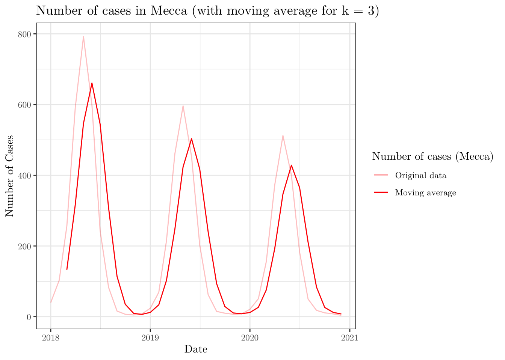

In this tutorial session, we will see how to read, manipulate and visualize data. The main reference for this session is the R for Data Science book, which is freely available online.
For this problem set, we will use the following libraries
library(tidyverse)
library(lubridate)
library(zoo)
library(rgeoboundaries)
library(patchwork)
library(viridis)Throughout the tutorial, consider the following scenario. Let \(\{y_{it}; i = 1, \cdots, I; t = 1, \cdots, T\}\) denotes a multivariate time series of disease counts in each Saudi Arabia region, such that \(I = 13\) refers to the number of considered regions and \(T = 36\) to the length of the time series. In particular, we will model \(Y_{it}|Y_{i,(t-1)} = y_{i,(t-1)} \sim \text{Poisson}(\lambda_{it})\), such that \(\log(\lambda_{it}) = \beta_0 + e_{i} + \beta_1 \cdot t + \beta_2 \cdot \sin(\omega t) + \beta_3 \cdot \cos(\omega t)\), where \(e_i\) corresponds to the population fraction in region \(i\) and \(\omega = 2\pi / 12\). Also, we have information about the population size and proportion of men in each region, as well as the number of deaths linked to each element of the \(\{y_{it}\}_{it}\) series.
You can download the .csv file here. And you read the file and convert it to a tibble object in the following way
data <- readr::read_csv(file = 'datasets/r4ds.csv')## Rows: 468 Columns: 6
## ── Column specification ────────────────────────────────────────────────────────
## Delimiter: ","
## chr (1): region
## dbl (4): n_cases, pop, men_prop, n_deaths
## date (1): date
##
## ℹ Use `spec()` to retrieve the full column specification for this data.
## ℹ Specify the column types or set `show_col_types = FALSE` to quiet this message.head(data, 5)## # A tibble: 5 × 6
## date region n_cases pop men_prop n_deaths
## <date> <chr> <dbl> <dbl> <dbl> <dbl>
## 1 2018-01-01 Eastern 33 4105780 0.403 3
## 2 2018-01-01 Najran 23 505652 0.486 1
## 3 2018-01-01 Northern Borders 30 320524 0.666 6
## 4 2018-01-01 Ha’il 36 597144 0.601 3
## 5 2018-01-01 Riyadh 38 6777146 0.559 6The code to generated such a data set can be found here.
Now, to manipulate our data set, we will use the dplyr package. From , we can see that there are 5 main methods, namely, mutate(), select(), filter(), summarise(), and arrange().
Start by selecting the date, region, and n_cases from our original data set. To do this, use the pipe operator %>% (in RStudio, you may use the shortcut Ctrl + Shift + M).
data %>% select(date, region, n_cases) %>% head(3)## # A tibble: 3 × 3
## date region n_cases
## <date> <chr> <dbl>
## 1 2018-01-01 Eastern 33
## 2 2018-01-01 Najran 23
## 3 2018-01-01 Northern Borders 30# Alternatively,
# data %>% select(-pop, -men_prop, -n_deaths) %>% head(3)
# data %>% select(date:n_cases) %>% head(3)Using ?tidyselect::select_helpers, one may find useful functions that can be combined with select(). For instance, select all columns that start with “n_”.
data %>% select(starts_with('n_')) %>% head(3)## # A tibble: 3 × 2
## n_cases n_deaths
## <dbl> <dbl>
## 1 33 3
## 2 23 1
## 3 30 6Aiming to obtain more meaningful sliced data sets, use the filter() and select() functions to select the the dates and regions for which the number of cases is greater than 40.
data %>% filter(n_cases > 30) %>% select(date, region) %>% head(3)## # A tibble: 3 × 2
## date region
## <date> <chr>
## 1 2018-01-01 Eastern
## 2 2018-01-01 Ha’il
## 3 2018-01-01 RiyadhAlso, select the date, name of the region, number of cases, and number of deaths for which the region is Eastern or Najran AND the date is greater than 2019-01-01 (you may want to use the lubridate package to deal with dates).
data %>% filter(region %in% c('Eastern', 'Najran'), date > ymd('2019-01-01')) %>%
select(date, region, n_cases, n_deaths) %>% head(3)## # A tibble: 3 × 4
## date region n_cases n_deaths
## <date> <chr> <dbl> <dbl>
## 1 2019-02-01 Eastern 26 7
## 2 2019-02-01 Najran 2 0
## 3 2019-03-01 Eastern 83 13Now, select the date, name of the region, number of cases, and number of deaths for which the number of cases is larger than 700 OR the number of deaths is equal to 10 and arrange, in a descending order for n_cases, the results.
data %>% filter(n_deaths == 10 | n_cases > 700) %>%
select(date, region, n_cases, n_deaths) %>% arrange(desc(n_cases)) %>% head(3)## # A tibble: 3 × 4
## date region n_cases n_deaths
## <date> <chr> <dbl> <dbl>
## 1 2018-05-01 Mecca 792 93
## 2 2018-05-01 Riyadh 719 121
## 3 2019-05-01 Ha’il 94 10Finally, using the mutate() function, create a new column into the original data set that shows the cumulative sum for the number of deaths (and name it cum_deaths), and select the number of deaths and this newly created column.
data %>% mutate(cum_deaths = cumsum(n_deaths)) %>%
select(ends_with('deaths')) %>% head(3)## # A tibble: 3 × 2
## n_deaths cum_deaths
## <dbl> <dbl>
## 1 3 3
## 2 1 4
## 3 6 10Remark: cummin(), cummax(), cummean(), lag(), etc. are examples of functions that can be used with mutate().
Using the lag() and drop_na() functions, create a new column named n_cases_lag2 and another one named n_deaths_lag3 that are copies of n_cases and n_deaths but with lags 2 and 3, respectively. Then, drop the rows with NAs in the n_cases_lag2 column and select all but the date and region columns.
data %>% mutate(n_cases_lag2 = lag(n_cases, 2),
n_deaths_lag3 = lag(n_deaths, 3)) %>%
drop_na(n_cases_lag2) %>%
select(-date, -region) %>%
head(3)## # A tibble: 3 × 6
## n_cases pop men_prop n_deaths n_cases_lag2 n_deaths_lag3
## <dbl> <dbl> <dbl> <dbl> <dbl> <dbl>
## 1 30 320524 0.666 6 33 NA
## 2 36 597144 0.601 3 23 3
## 3 38 6777146 0.559 6 30 1Now, the goal is work with the group_by() function. To do this, group the data set by region, and select the three first columns.
data %>% group_by(region) %>% select(1:3) %>% head(3)## # A tibble: 3 × 3
## # Groups: region [3]
## date region n_cases
## <date> <chr> <dbl>
## 1 2018-01-01 Eastern 33
## 2 2018-01-01 Najran 23
## 3 2018-01-01 Northern Borders 30Combining a few different functions, select all but the pop column and create a new one (named norm_cases) that shows the normalized number of cases by date.
data %>% group_by(date) %>%
mutate(norm_cases = n_cases/sum(n_cases),
cumsum = cumsum(norm_cases)) %>%
select(-pop) %>%
head(14)## # A tibble: 14 × 7
## # Groups: date [2]
## date region n_cases men_prop n_deaths norm_cases cumsum
## <date> <chr> <dbl> <dbl> <dbl> <dbl> <dbl>
## 1 2018-01-01 Eastern 33 0.403 3 0.0862 0.0862
## 2 2018-01-01 Najran 23 0.486 1 0.0601 0.146
## 3 2018-01-01 Northern Borders 30 0.666 6 0.0783 0.225
## 4 2018-01-01 Ha’il 36 0.601 3 0.0940 0.319
## 5 2018-01-01 Riyadh 38 0.559 6 0.0992 0.418
## 6 2018-01-01 Asir 21 0.444 4 0.0548 0.473
## 7 2018-01-01 Mecca 40 0.302 9 0.104 0.577
## 8 2018-01-01 Tabuk 33 0.347 7 0.0862 0.663
## 9 2018-01-01 Medina 29 0.263 3 0.0757 0.739
## 10 2018-01-01 Qasim 14 0.373 2 0.0366 0.775
## 11 2018-01-01 Al Bahah 34 0.593 9 0.0888 0.864
## 12 2018-01-01 Jizan 33 0.386 4 0.0862 0.950
## 13 2018-01-01 Al Jawf 19 0.298 3 0.0496 1
## 14 2018-02-01 Eastern 67 0.403 10 0.0860 0.0860Using the summarise() (or summarize()) function, get the average and variance for the variables n_cases and n_deaths, as well as the total number of rows.
data %>% select(n_cases, n_deaths) %>%
summarize(mean_n_cases = mean(n_cases, na.rm = TRUE),
var_n_cases = var(n_cases, na.rm = TRUE),
mean_n_deaths = mean(n_deaths, na.rm = TRUE),
var_n_deaths = var(n_deaths, na.rm = TRUE), n = n())## # A tibble: 1 × 5
## mean_n_cases var_n_cases mean_n_deaths var_n_deaths n
## <dbl> <dbl> <dbl> <dbl> <int>
## 1 63.9 11830. 9.76 294. 468Notice that the result from the above item is not very impressive, but we can combine it with group_by() to get more meaningful statistics. For instance, obtain similar results as before, but for each region.
data %>% group_by(region) %>%
select(n_cases, n_deaths) %>%
summarize(mean_n_cases = mean(n_cases, na.rm = TRUE),
var_n_cases = var(n_cases, na.rm = TRUE),
mean_n_deaths = mean(n_deaths, na.rm = TRUE),
var_n_deaths = var(n_deaths, na.rm = TRUE), n = n())## Adding missing grouping variables: `region`## # A tibble: 13 × 6
## region mean_n_cases var_n_cases mean_n_deaths var_n_deaths n
## <chr> <dbl> <dbl> <dbl> <dbl> <int>
## 1 Al Bahah 39.7 4043. 7.44 221. 36
## 2 Al Jawf 39.9 2953. 5.83 91.8 36
## 3 Asir 54.5 4383. 8.94 142. 36
## 4 Eastern 84.2 11258. 12.6 245. 36
## 5 Ha’il 47.3 4685. 8.58 258. 36
## 6 Jizan 55.0 5881. 9.39 236. 36
## 7 Mecca 185. 49857. 26.9 1150. 36
## 8 Medina 49.0 6594. 6.81 141. 36
## 9 Najran 33.3 2260 5.56 78.4 36
## 10 Northern Borders 36.6 3947. 5.58 108. 36
## 11 Qasim 37.6 3111. 5.28 65.2 36
## 12 Riyadh 126. 30390. 17.1 600. 36
## 13 Tabuk 42.4 4215. 6.92 119. 36And as in SQL, in tidyverse, there are also functions that make joining two tibbles possible. From the documentation page, we have inner_join(), left_join, right_join() and full_join(). As an example, consider the following data set, which shows the (fake) mean temperature (in Celsius) in almost all regions and studied months in Saudi Arabia. Assuming the previous data set is in data,
set.seed(0)
n <- (nrow(data) - 3)
new_data <- tibble(id = 1:n, date = data$date[1:n], region = data$region[1:n], temperature = round(rnorm(n, 30, 2), 1))
new_data## # A tibble: 465 × 4
## id date region temperature
## <int> <date> <chr> <dbl>
## 1 1 2018-01-01 Eastern 32.5
## 2 2 2018-01-01 Najran 29.3
## 3 3 2018-01-01 Northern Borders 32.7
## 4 4 2018-01-01 Ha’il 32.5
## 5 5 2018-01-01 Riyadh 30.8
## 6 6 2018-01-01 Asir 26.9
## 7 7 2018-01-01 Mecca 28.1
## 8 8 2018-01-01 Tabuk 29.4
## 9 9 2018-01-01 Medina 30
## 10 10 2018-01-01 Qasim 34.8
## # … with 455 more rowsNotice that there is a column named id on new_data. We will need it to link the new tibble to the old one. Thus, let’s create a similar column in data.
data <- data %>% add_column(id = 1:(nrow(data))) %>% select(c(7, 1:6))
head(data, 1)## # A tibble: 1 × 7
## id date region n_cases pop men_prop n_deaths
## <int> <date> <chr> <dbl> <dbl> <dbl> <dbl>
## 1 1 2018-01-01 Eastern 33 4105780 0.403 3Now, we can incorporate the new data into the original tibble by using, for example, the left_join() function.
data %>% left_join(new_data %>% select(id, temperature), by = 'id') %>%
tail(1)## # A tibble: 1 × 8
## id date region n_cases pop men_prop n_deaths temperature
## <int> <date> <chr> <dbl> <dbl> <dbl> <dbl> <dbl>
## 1 468 2020-12-01 Al Jawf 2 440009 0.298 0 NAFor this section, we will use ggplot2 to produce different plots.
From the original data set, create an object that contains the columns date, region, n_men, n_women, n_cases, and n_deaths, such that n_men and n_women correspond to the number of men and the number of women, respectively (to do this, recall that men_prop represents the proportion of men in the population for a given region).
data <- data %>% mutate(women_prop = 1 - men_prop) %>%
mutate(n_men = pop * men_prop) %>%
mutate(n_women = pop * women_prop) %>%
select(date, region, n_men, n_women, n_cases, n_deaths)
head(data, 7)## # A tibble: 7 × 6
## date region n_men n_women n_cases n_deaths
## <date> <chr> <dbl> <dbl> <dbl> <dbl>
## 1 2018-01-01 Eastern 1654276. 2451504. 33 3
## 2 2018-01-01 Najran 245548. 260104. 23 1
## 3 2018-01-01 Northern Borders 213622. 106902. 30 6
## 4 2018-01-01 Ha’il 358851. 238293. 36 3
## 5 2018-01-01 Riyadh 3785117. 2992029. 38 6
## 6 2018-01-01 Asir 850468. 1062924. 21 4
## 7 2018-01-01 Mecca 2086623. 4828383. 40 9Now, the main goal is visualize the studied data set. To do this, we will mainly rely on the ggplot2 library, which is also included in the tidyverse universe.
Start by creating a line chart for the number of cases in each region (all in the same plot) over the months (when I tried to plot it in my RMarkdown document, I had problems with the Ha’il name. If the same happens to you, try to replace it by Hail). Map region to color.
data <- data %>% mutate(region = replace(region, region == 'Ha’il', 'Hail'))ggplot(data = data,
mapping = aes(x = date, y = n_cases, color = region)) +
geom_line() +
theme_bw() +
labs(x = 'Date', y = 'Number of Cases', color = 'Region') +
theme(text = element_text(family = 'LM Roman 10'))When plotting, we can also map more than one property at a time. For instance, plot a dot chart for the number of cases in each region over months that maps region to color and n_deaths to size.
ggplot(data = data,
mapping = aes(x = date, y = n_cases, size = n_deaths, color = region)) +
geom_point() +
theme_bw() +
labs(x = 'Date', y = 'Number of Cases', color = 'Region', size = 'N. Deaths') +
theme(text = element_text(family = 'LM Roman 10'))Now, using the function rollmean() from the zoo package, plot the number of cases in Mecca (notice that you will have to filter your data set) over time and the moving average (with window \(\text{k} = 3\)) of the same time series.
ggplot(data = data,
mapping = aes(x = date, y = n_cases)) +
geom_line(data = . %>% filter(region == 'Mecca'), aes(color = 'light_red')) +
geom_line(data = . %>% filter(region == 'Mecca'),
aes(y = rollmean(x = n_cases,
k = 3,
align = 'right',
fill = NA),
color = 'solid_red')) +
theme_bw() +
labs(x = 'Date', y = 'Number of Cases',
title = 'Number of cases in Mecca (with moving average for k = 3)') +
scale_color_manual(name = 'Number of cases (Mecca)',
values = c('light_red' = alpha('red', 0.25),
'solid_red' = alpha('red', 1.00)),
labels = c('Original data', 'Moving average')) +
theme(text = element_text(family = 'LM Roman 10'))
Now, we will plot the map of Saudi Arabia divided into the given regions. To do this, we will need to work with a shapefile for the boundaries of the Kingdom. This type of file may be found online. However, there are some R packages that provide such data. For instance, we can use the geoboundaries('Saudi Arabia', adm\_lvl = 'adm1') function from the rgeoboundaries package to obtain the desired data set.
After downloading the data, you can plot it using the ggplot(data) + geom_sf() functions (depending on what you are trying to do, you may have to install (and load) the sp and/or sf libraries).
KSA_shape <- geoboundaries('Saudi Arabia', adm_lvl = 'adm1')
KSA_shape$shapeName <- data$region[1:13]
ggplot(data = KSA_shape) +
geom_sf() +
geom_sf_label(aes(label = shapeName)) +
theme_bw() +
labs(x = 'Longitude', y = 'Latitude', title = 'Map of Saudi Arabia') +
theme(text = element_text(family = 'LM Roman 10'))As a final task, plot two versions of the above map side-by-side. On the left, the colors should represent the population size for men in each region; similarly, on the right, the population size for women (to combine plots in this way, you may want to use the patchwork package. And for different colour palettes, you may use the viridis package). Use the same scale, so that the values are comparable.
KSA_shape$n_men <- data$n_men[1:13]
KSA_shape$n_women <- data$n_women[1:13]
min_pop = 0 # min(c(KSA_shape$n_men, KSA_shape$n_women))
max_pop = 5e+06 # max(c(KSA_shape$n_men, KSA_shape$n_women))
men <- ggplot(data = KSA_shape) +
geom_sf(aes(fill = n_men)) +
scale_fill_viridis(limits = c(min_pop, max_pop), name = 'Population',
option = 'plasma') +
geom_sf_label(aes(label = shapeName)) +
theme_bw() +
labs(x = 'Longitude', y = 'Latitude',
title = 'Population in Saudi Arabia (Male)') +
theme(text = element_text(family = 'LM Roman 10'))
women <- ggplot(data = KSA_shape) +
geom_sf(aes(fill = n_women)) +
scale_fill_viridis(limits = c(min_pop, max_pop), name = 'Population',
option = 'plasma') +
geom_sf_label(aes(label = shapeName)) +
theme_bw() +
labs(x = 'Longitude', y = 'Latitude',
title = 'Population in Saudi Arabia (Female)') +
theme(text = element_text(family = 'LM Roman 10'))
combined <- men + women + plot_layout(guides = 'collect', ncol = 1) &
theme(legend.position = 'right', legend.key.height = unit(1.25, 'cm'))
print(combined)